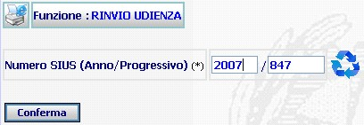
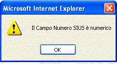
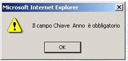
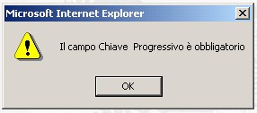

UDIENZA - RINVIO UDIENZA DA VERBALE: la funzione prescelta consente di segnare su un procedimento il rinvio dell'udienza,permettendo l'inserimento della nuova data attraverso la funzione di rinvio udienza.
LE MASCHERE VIDEO
La funzione in esame " RINVIO UDIENZA DA VERBALE," viene realizzata attraverso l'utilizzo della maschera che segue.
Sono presenti due campi, contrassegnati con asterisco, da compilare obbligatoriamente.

N.B.: se è presente un procedimento corrente su cui si sta già lavorando verrà visualizzata a fianco del Numero SIUS anche il pulsante
COME FARE PER ...
| Se presente il pulsante , l'utente può compilare, in automatico, i campi relativi al Numero SIUS, cliccando appunto sul bottone |
| Per fissare la data di rinvio udienza su un procedimento, l'utente deve: |
1. Compilare i campi anno e numero progressivo del procedimento.
2. agire sul pulsante
per visualizzare il procedimento ed accedere alla maschera successiva per l'inserimento della data di fissazione udienza.
CAMPI
I dati che consentono di ricercare un procedimento sono i seguenti:
| NOME | DESCRIZIONE |
| Anno | Compilare il campo con l'Anno voluto in formato numerico "aaaa". |
| Numero SIUS | Compilare il campo con caratteri numerici. |
PULSANTI
Oltre al pulsante
 ,
che
fa parte del gruppo di
pulsanti di "Uso Comune"
è presente il seguente pulsante:
,
che
fa parte del gruppo di
pulsanti di "Uso Comune"
è presente il seguente pulsante:
|
PULSANTE |
DESCRIZIONE |
|
|
Questo pulsante ha lo scopo di compilare, in automatico, i campi relativi al Numero SIUS (anno e progressivo) con il procedimento corrente. |
BOTTONI
Oltre ai comandi funzionali relativi al menù verticale sono presenti i seguenti comandi:
|
COMANDI |
DESCRIZIONE |
|
|
A fronte di tale comando, il sistema, dopo aver verificato la validità dei dati specificati, ricerca il procedimento visualizzandolo, e permette l'accesso alla funzione per l'inserimento della data di rinvio udienza. |
CONTROLLI
Azionando il bottone di  , il sistema verifica che i campi
obbligatori siano stati correttamente compilati, e, che il procedimento esiste.
, il sistema verifica che i campi
obbligatori siano stati correttamente compilati, e, che il procedimento esiste.
Se non riscontrerà incongruenze verrà visualizzata la maschera successiva che consente l'inserimento della data di rinvio udienza., altrimenti presenterà il seguente avviso:
| nel caso di non presenza del procedimento |
|
nel caso di errata compilazione dei campi dati |

|
nel caso di dati mancanti, indicando qual'e il dato come ad esempio: |

